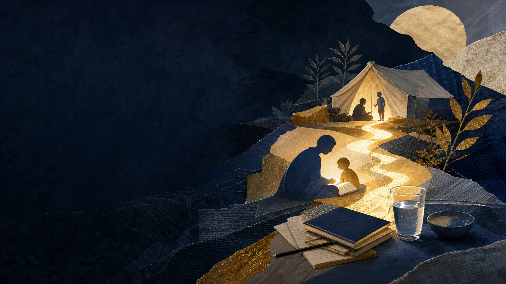
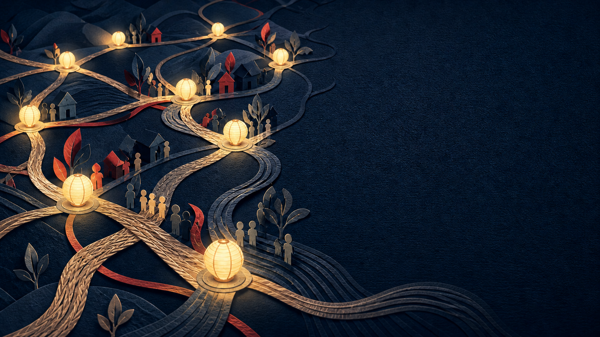

SCROLL FILM0000/ 1200
Karen Organization of America
Many places.
One community.
A national home for Karen communities to lead, connect, and act together.
01 — Civic voiceWe turn
We turn
voices into
momentum.
Teaching public systems. Preparing advocates. Growing youth leadership.

02 — BelongingCulture is
Culture is
a living
connection.
Gatherings, workshops, sport, art, and the joy of being known.

03 — SolidarityCare moves
Care moves
where it is
needed.
Food, water, shelter, education, and training for displaced families.

04 — One national bodyTwenty states.
Twenty states.
One shared
future.
Founded in Omaha in 2018, KOA strengthens a national voice.
Enter our story ↗- Civic voice
- Belonging
- Solidarity
- National network